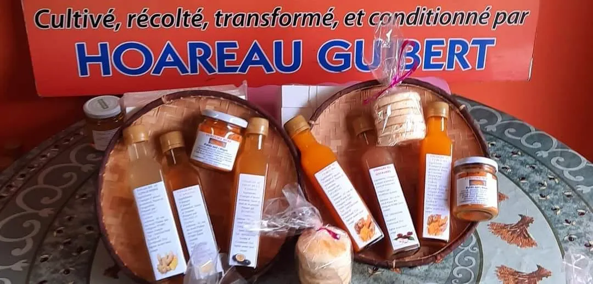
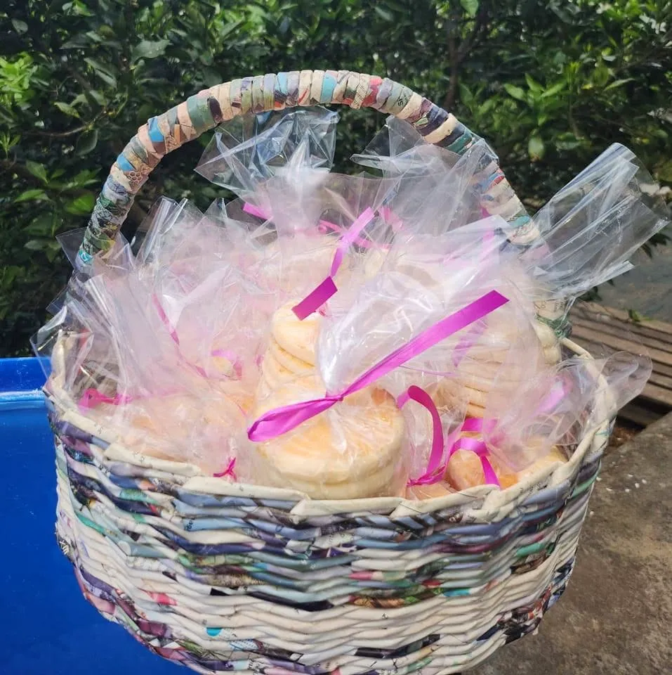
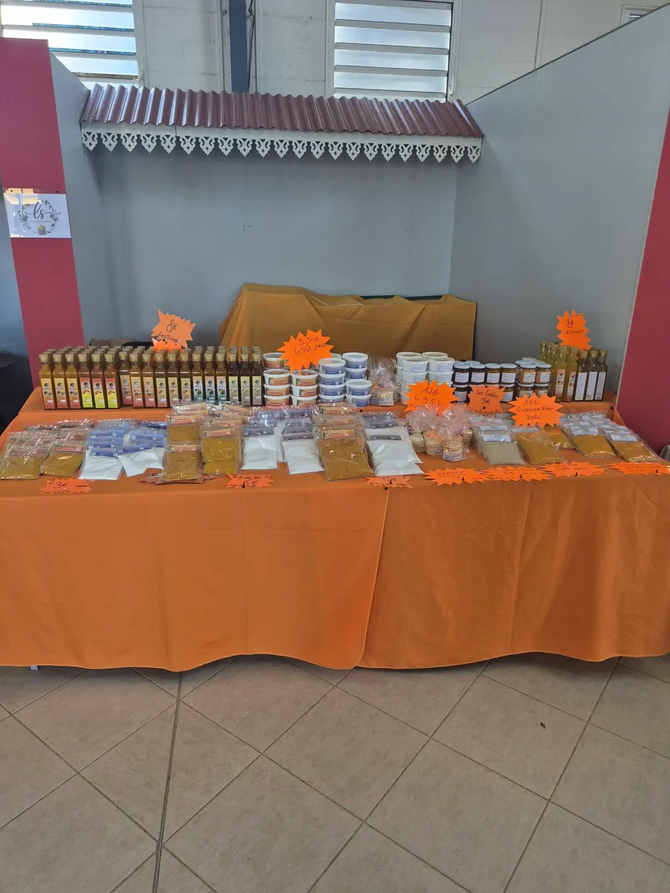
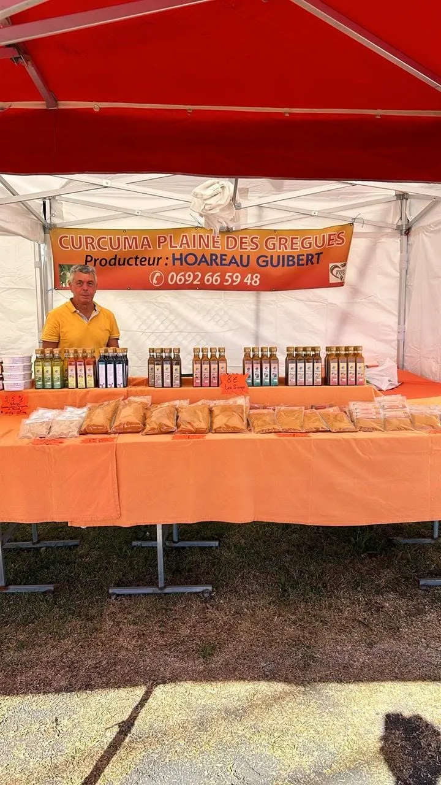

Curcuma et arrow-root de Saint-Joseph, cultivés, récoltés, transformés et conditionnés par Hoareau Guibert.
Au 69 chemin du Rond, à la Plaine des Grègues, le pays du safran péi, chaque racine est suivie du champ jusqu’au sachet. Une production de famille, avec le goût et la couleur du Sud.
« Cultivé, récolté, transformé et conditionné par Hoareau Guibert »

Le safran péi en poudre et en racine, pour les carris et toutes les envies de couleur.
La farine traditionnelle des Hauts, pour les gâteaux et douceurs d’antan.
Des créations autour du curcuma et des plantes du jardin, à découvrir au stand.


69 chemin du Rond · Plaine des Grègues · 97480 Saint-Joseph
Nos dates de foires et de marchés sur notre page Facebook